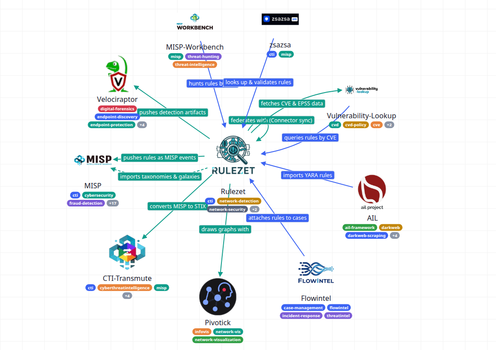

Pivograph
Pivograph
Pivograph
Pivograph
Pivograph turns one JSON file into an interactive map of an organization's projects, platforms and partners, and of how each one uses the others. Write it by hand, have an AI agent write it from this documentation, or import a published .well-known descriptor.

It opens on the Rulezet example. Drop your own JSON file on the page, or press New to start from ready-made types, then add nodes and edges with the forms.
If the organization publishes /.well-known/open-contributions.json, Import well-known… turns it into a map in one step: projects, data, standards and relationships.
Point any AI agent at the guide and name the organization. It follows the mapping procedure and returns one JSON file you open in the app.
Nodes are the things being mapped: projects, platforms, datasets, partners. Edges say how two of them are related, and which way the arrow goes. Types give a family of nodes or edges the same look, and tags become small pills you can filter by.
Any field left out is inherited from the node's type, then from a built-in default, so a map can start with a single node and grow.